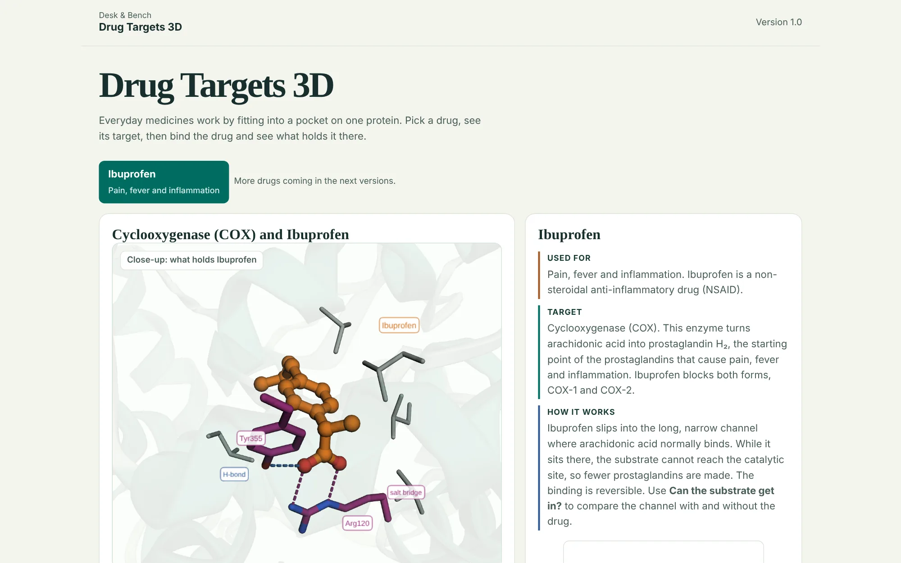
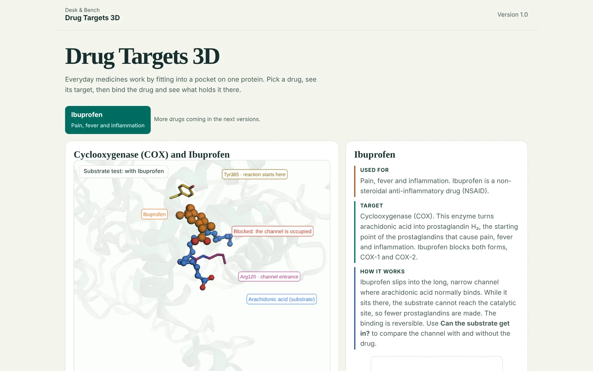

Drug Targets 3D
Everyday medicines work by fitting into a pocket on one protein. Bind the drug to its target in 3D, zoom into the pocket to see what holds it, and watch the natural substrate get blocked.
Version 1.0, with ibuprofen and cyclooxygenase. More drugs will follow. Made for students. Free, with no account; nothing is saved or sent anywhere.

What Drug Targets 3D does
It is made for undergraduate students: each drug is shown with its target protein from a published crystal structure, step by step.
Bind the drug
The protein and the drug start apart. One button moves the drug into its binding site, in the pose seen in the crystal structure.
Zoom to the pocket
A close-up shows only what holds the drug in place: salt bridges, hydrogen bonds and the non-polar side chains around it, with distances.
Can the substrate get in?
Watch the enzyme's natural substrate enter the empty channel and leave as product, then see the same substrate stopped by the drug.
Check yourself
A short question for each drug, and the structure and literature sources behind every view.

How to use it
- Open the appWith the button above, on a computer or tablet. It also works on a phone.
- Bind the drugPress “Bind the drug” and drag to look at the protein from any side.
- Zoom to the pocketSee which parts of the protein hold the drug and read “What holds it”.
- Test the substrateUnder “Can the substrate get in?”, play the channel without and with the drug.
Questions
Where do the structures come from?
From the Protein Data Bank. Ibuprofen in cyclooxygenase-1 is entry 1EQG; the substrate arachidonic acid is from entry 1DIY of the same protein, placed in the same view by superposing the two structures. The bound poses are the crystal poses; the paths in and out and the colour change to the product are drawn for illustration. The app lists every source under “Structure and sources”.
Is this medical advice?
No. The app explains how medicines act on their targets for learning. It gives no doses and no advice on taking any medicine.
Which drugs are included?
Version 1.0 has ibuprofen and its target, cyclooxygenase. More everyday drugs with well-established targets will be added in later versions.
Does it save anything or need an account?
No. The app keeps nothing between visits and sends nothing over the internet. The 3D viewer and the structures are inside the HTML file.
Can I use it without the internet?
Yes. Download the ZIP, extract it and open drug-targets-3d.html in Chrome, Edge or Firefox.
Can I use it in my course?
Yes. It is free to use in teaching. Students can open it from the link without installing anything.
Can I change it or build on it?
Yes. Drug Targets 3D is open source under the MIT License. You may use, change and share it, including in your own projects, as long as you keep the copyright notice and the licence text, which credit the original author. The bundled 3D viewer, 3Dmol.js, keeps its own licence, included in the HTML file. The source is on GitHub and the licence is in LICENSE.
I found a bug or have a suggestion.
You can report it on GitHub Issues. Open GitHub Issues